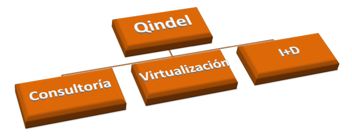
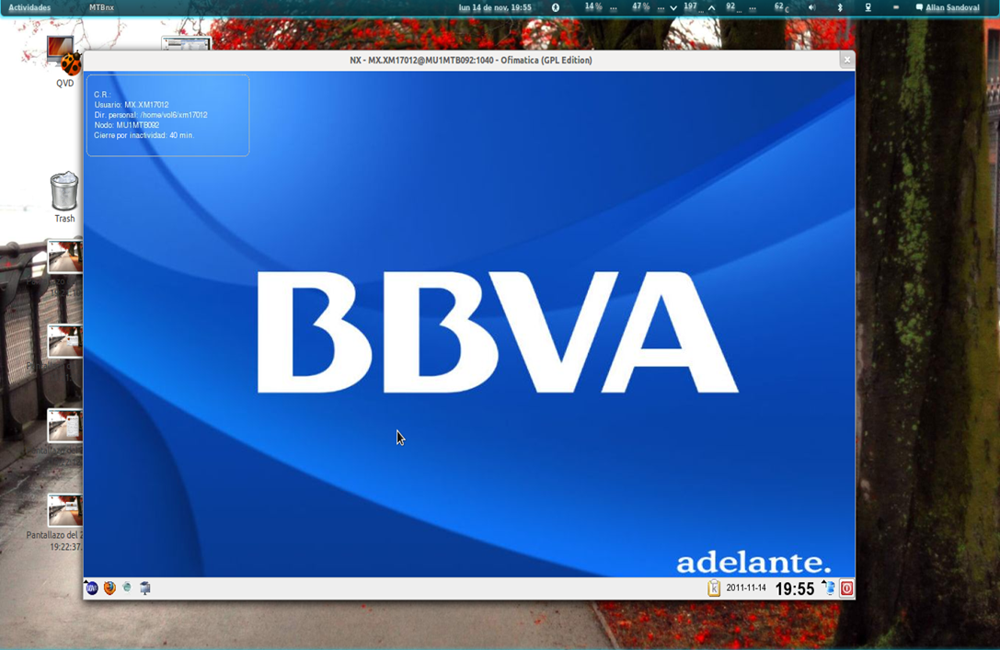

Compañía internacional de TI especializada en el desarrollo de proyectos con Linux y FLOSS, con más de 17 años en los sectores de telco, banca y retail.
Con oficinas en:


El culpable: ¡nx!
Colaboramos para:
¿Cual va a ser la relevancia del escritorio Linux?
¿Cual va a ser la relevancia del Software Libre?
El escritorio: cada vez menos relevante, solo una puerta de entrada a la "nube"
Software Libre: otra vez en la casilla cero.
Cesar de la Hoz <cdelahoz@qindel.com>
Salvador Fandiño <salvador@qindel.com>